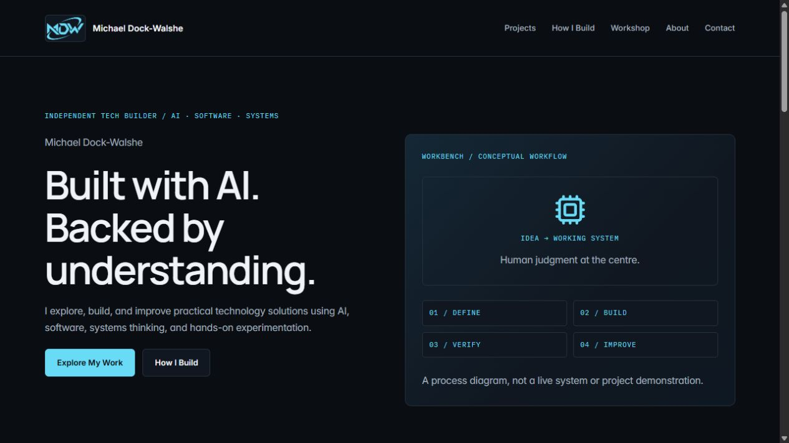

CASE STUDY / PERSONAL WEBSITE
A shorter route
to the useful details.
A revision of this portfolio to help an employer find my career direction, project evidence, résumé and contact details.
REQUIREMENTS
Make the main journey work.
- Career direction visible in the introduction.
- Project links lead to documented work.
- The same navigation on every page.
- Résumé and email accessible without a form.
- Readable layout and working menu on a phone.
- Starting point
- Existing Framer export with local assets
- Implementation
- Static HTML pages with shared CSS and JavaScript
- Status
- Updated October 2026
- Original repository
- View existing source ↗

01 / IMPLEMENTATION DECISION
Share the navigation and styles.
The downloaded pages used different navigation layouts and large exported page bundles. The revised pages use one navigation pattern, one shared stylesheet and one script for the menu and contact interactions.
Keeping the site static suits its content: it can serve the pages and résumé without a database or a framework build. The original downloaded assets are retained.
02 / A FAULT FOUND DURING REVIEW
The screenshot cropped the headline.
What went wrong
The first project image used a fixed display ratio with a cover crop. That cut off the left side of the original homepage heading.
What changed
The image was changed to preserve its source ratio and use contain sizing. The saved desktop preview was then inspected to confirm that the heading and navigation remained visible.
03 / CHECKS
Check the routes people use.
- Page links, local assets and section targets checked for missing destinations.
- Desktop and phone-width layouts checked for horizontal overflow.
- Menu opening, keyboard dismissal and navigation checked.
- Résumé loading and contact-form required fields checked.
The contact form validates required fields and displays submission feedback. Direct email is available as an alternative.
04 / CONTRIBUTION
Direction and AI-assisted implementation.
I defined the purpose of the portfolio, chose entry-level technology roles as the audience and requested a local review before publication. AI implemented the revised pages, helped edit the content and performed the local checks. The case study documents that work without presenting all of the code as independently authored by me.
The repository contains the website source. The image above preserves the earlier homepage for comparison.
More about my background.
My résumé covers my current experience and entry-level career direction.
View résumé